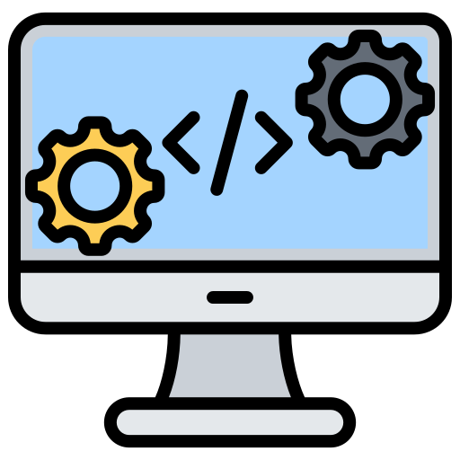
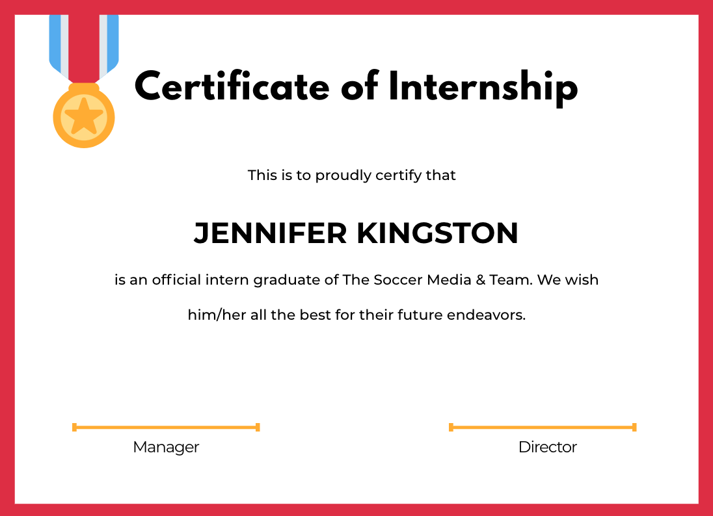
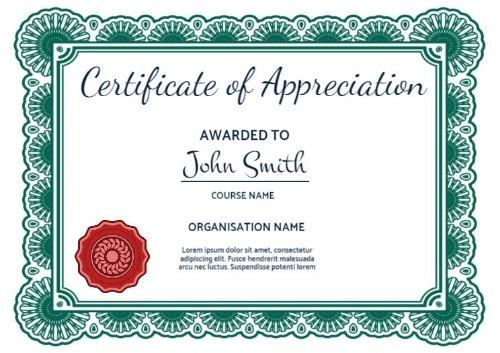

A
B
O
U
T
Hey! I am a graduate student at Northeastern University majoring in
Software Engineering Systems. I am a passionate engineer who likes
working on products that creates a difference in one's life. I would
like to work on roles that involve designing large-scale distributed
systems. I am well-versed in GoLang, NodeJS, Docker, and databases
such as SQL and NoSQL. My primary objective during my master's
degree is to learn more about Distributed Systems, Cloud Computing,
and creating Infrastructures with technologies like Kubernetes and
Terraform.
SKILLS

Backend
Cloud
Databases

Web Development
Languages :


CERTIFICATES

Certificate 1

Certificate 2
EXPERIENCE
Sensho
April 2022 - August 2022
- Designed APIs for analytics on admin panel and integrated Stripe payment processing platform
- Remodeled monolithic architecture to microservice architecture to scale services
- Standardized asynchronous communication between microservices using RabbitMQ reducing response time by 50ms
- Implemented NextJS to work on client projects for VS Club and Brahmand
Haasyl Technologies
July 2021 - March 2022
- Developed eKYC and eNach flow for validation of users on RBI (Reserve Bank of India) platform to get their microloans sanctioned
- Integrated Easebuzz, a payment gateway to automate money transfers using cron jobs and removing manual dependency by 90%
- Programmed robust transaction APIs that handled more than 10,000 transactions managing around 17 lakhs INR (21,300 USD approximately)
- Engineered APIs for Admin Panel to track users’ transactions, manage fraudulent transactions and default payment flow
Uraan Softskills
April 2021 - June 2021
- Collaborated with the designing team to revamp Learnreel, an eLearning web application using ReactJS and Redux to improve the page reload speed by 100ms
- Built APIs using NodeJS for JWT authentication and flow to upload videos and courses to AWS S3
PROJECTS
Zomato Clone
A microservice system architecture design project for a food
delivery system with multiple restaurant outlets. Built scalable
microservice system using GoLang and NodeJS leveraged by gRPC for
internal communication Utilizing Redis Geospatial features to
implement proximity service for the driver’s module

DocCreate
A content management system that allows inexperienced developers
to produce documentation in the style of major library
documentation. Leveraging hexagonal architecture for backend
services written using Go Gin framework to handle concurrent
requests Secured the services using JWT refresh token system
Support for personal drafts and public hosting that can be shared.
JazzBike
As an engineering student, I've always believed that developing a
product to address a problem will not only help me understand how
to utilize technology, but also tackle a common problem that
society faces. Observing the widespread use of two-wheelers in my
city just for short distances, I developed JazzBike, a marketplace
model that allows individuals to monetize their idle bicycles by
renting them to riders. I built the backend architecture in
TypeScript using GraphQL and incorporated some interesting
features like live tracking, in-app messaging, and a review
mechanism for better cycling selections.
CONTACT